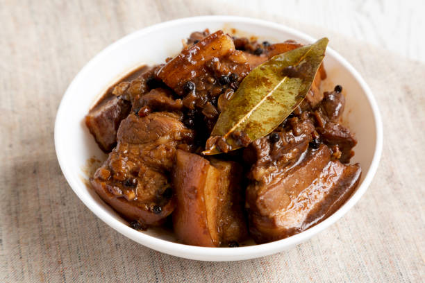

Home
Pork Adobo

Description
Adobo is considered the national dish of the Philippines. It is a traditional Filipino stew cooked by braising pork in soy sauce, vinegar, and garlic
resulting in a mixture of savory and tangy flavor. The meat is slowly cooked until tender and is typically served with white rice.
Different variations of this dish existed in the Philippines, with different ratios of ingredients or added components like sugar and onions,
some cooked it with more sauce, while others prefer it reduced to dry. Others cooked it more tangy, while some like it sweet.
Ingredients
- Pork Belly
- Soy Sauce
- Vinegar
- Garlic
- Dried Bay Leaves
- Salt
- Black Peppercorn
- Water
Steps
- Cut the pork belly in uniform pieces. Combine the meat with soy sauce and garlic then marinate for atleast 1 hour.
- Heat the pot and put-in the marinated pork belly, cook the meat for a few minutes until it is lightly brown.
- Add the remaining marinade mixture including the garlic.
- Pour some water, whole peppercorn, and dried bay leaves, then stir to combine.
- Add the vinegar to cook off the strong acid taste.
- Bring to a boil. Lower the heat, cover, and simmer for 40 minutes to 1 hour or when the meat is tender and the sauce is reduced.
- Season with salt and pepper to taste.
- Serve.